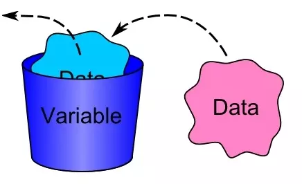

类型和变量
一个计算机程序是由算法+数据结构组成，在我们编写完程序之后，在运行它之前，它仅仅是一段静态的代码，只是步骤和方法的描述，并没有真正地帮我们解决问题。只有在运行起来之后，才能开始做事情，就像一副写在书上的《西红柿炒鸡蛋》的菜谱，我们光去看它是没有用的，只有我们买好原材料（西红柿和鸡蛋）之后，去厨房真正地去做它才能最终吃到好吃的西红柿炒鸡蛋。
细心的同学应该已经发现了，如果把程序比做菜谱，那么原材料（西红柿和鸡蛋）又应该是什么的比喻呢？实际上讲，我们编写的程序就是为了用来处理数据, 上一段中提到的原材料就是数据的比喻，而当程序运行起来并开始处理数据之后，它就从静态变为了动态，那么这个动态运行活动就叫做进程：
进程 = 程序 + 数据
process = program + data
或者
进程 = 算法 + 数据结构 + 数据
process = algorithm + data structure + data
那么什么是数据呢？你可能第一个想到的就是数学里学到的数值，如1，2，3...43.23，50，1000等等， 其实你的理解并不是错的，只是仅仅列出了数据的其中一种类型。
计算机中的数据不仅仅是狭义上的数字，还可以是具有一定意义的文字，字母，数字符号的组合、图形、图像、音频、视频等等。总之，根据百度百科的解释，数据是事实和观察的结果，是对客观事物的逻辑归纳，是用来表示客观事物的未经加工的原始素材。
每一种编程语言都有自己内建的基本数据类型，所以我们学习Python的第一个重要的内容就是基本数据类型。
基本数据类型Basic DataTypes
整型int
整型，英文为integer，是指没有小数部分的数值型数据，比如1，2，3，100，44221等等，但是1.0， 2.0， 10.0这些数值则不是整型，因为它们都带有小数部分，即使他们和整数部分的值大小相等。一个integer是集合 Z = {..., -2, -1, 0, 1, 2, ...} 中的一个数。在Python中，用int来表示整型的类型名，它是Python中唯一的一个整型类型，可以处理任意大小的整数。
可以在IDLE中直接输入一个整型数据，再回车:
>>> 1
1
>>> 2
2
>>> 100
100
>>> 888888888888888888888
888888888888888888888
Python中同样可以支持二进制、八进制和十六进制的表示法，如0b1000(二进制，换算成十进制为8)，0o742(八进制，换算成十进制为482)， 0xFAE(十六进制，换算成十进制为4014)。其中0b、0o和0x分别为二进制、八进制和十六进制的前缀，如果不写的话，二进制和八进制会被当做十进制处理，十六进制则会报错。
>>> 0b1000
8
>>> 0o742
482
>>> 0xFAE
4014
浮点型float
浮点型，英文为float，是指具有小数部分的数值型数据，比如1.414、3.1415926、2.718281828459045、4.000等等。在Python中，用float来表示浮点型的类型名，它是Python中唯一的一个浮点型类型，可以处理任意精度的浮点数。
>>> 1.414
1.414
>>> 3.1415926
3.1415926
>>> 2.718281828459045
2.718281828459045
>>> 4.000
4.0
Python中的浮点型支持十进制和指数型两种表示法，指数型也叫科学记数法，属于超纲内容，这里就不做过多介绍了，感兴趣的同学可以自行研究一下。
字符串str
字符串，英文为string，是指由文字、字母、数字以及一系列符号组成的一串字符，这些字符由单引号或者双引号括起来，比如“abc”、‘banana’、‘1000’等等。在Python中，用str来表示字符串的类型名。需要特别注意的是，只要用引号括起来之后，就是字符串，即使里面的字符看起来看是一个整型或者浮点型。
>>> "abc"
'abc'
>>> 'banana'
'banana'
>>> '1000'
'1000'
如果在字符串中需要用到引号("或')的话，可以用转义的方式(\'或\")，或者在需要用到单引号的时候，用双引号把字符串括起来，反之亦然:
>>> 'I\'m a student.'
"I'm a student."
>>> "I\'m a student."
"I'm a student."
布尔型bool
布尔型，英文为boolean，用来描述真假的一种数据，也叫逻辑型，它只有两个值: True 和 False。这里要注意一定是只有首字母大写，如果写成了true、flase、TURE或者是FaLSe都是错误的。在Python中，用bool表示布尔型的类型名。
>>> True
True
>>> False
False
如果输入错误，会报错，如输入true:
Traceback (most recent call last):
File "<stdin>", line 1, in <module>
NameError: name 'true' is not defined
在Python中，bool类型其实是int类型的子类型，一般情况下，False就是0, True就是1；但是所有的非0的数值都可以认为是真逻辑值，这一点我们会在下一章节中详细说明。
空值None
空值，英文为None，是Python中一个很特殊的类型，它只有一个值，即None，表示空对象，什么都没有。但是数据为空并不是空值，比如空字符串""，它是字符串类型，并不是空值类型。在Python中，用NoneType表示空值的类型名。
>>> None
>>>
>>> ""
''
空值并不是一个没有意义的类型，相反，需要用到它的地方有很多。比如，调用函数的时候，不想给某个参数传递值，但是这个参数没有默认的值，所以传值是必须的，那么就可以把空值传给它。关于这一点，我们以后遇到的时候，结合实际用法就可以理解得更好。
变量Variables
在计算机编程中，变量就是一个数据的载体，也就是一块用来保存数据的内存空间，它可以被读取和修改。一个变量有两个最基本的要素:名字和类型。
我们可以把变量想像成一个用来存放数据的容器，像下图一样:

他在内存中的表现是这样的:
上图中的a就是变量的名字，在Python中，变量的类型不是在声明它的时候给出，而且会根据我们赋给它的值变化，比如a = 1，这时变量a的类型是整型int，如果我们重新给它赋值a="apple"，那它的类型就变成了字符串str；我们也可以通过一些内建函数来改变它的类型，这一点我们后面很快就会讲到。
变量命名
每一个变量都需要提前定义，首先要给它取一个名字，方便我们在后面使用它。变量的命名是要遵循下列规则的：
- 变量的名字由字母、下划线
_和数字组成，但是不能以数字开头。这里的字母不单单是26个英文字母，它指的是在Unicode(也被称作万国码)字符集里的所有字母，包括中文、英文、日文、希腊字母、德文等等，范围非常广，但是像@、#、$这些字符是不能出现在变量名中的，我们强烈建议起名的时候只用英文字母。 - 变量的名字是大小写敏感的，比如
A和a是两不同的变量。 - 变量的名字不要使用Python中已经保留的关键字，也不要用自定义的函数、类名。
我们可以通过下面的方式查看Python中有哪些保留的关键字:
>>> import keyword
>>> keyword.kwlist
['False', 'None', 'True', '__peg_parser__', 'and', 'as', 'assert', 'async', 'await', 'break', 'class', 'continue', 'def', 'del', 'elif', 'else', 'except', 'finally', 'for', 'from', 'global', 'if', 'import', 'in', 'is', 'lambda', 'nonlocal', 'not', 'or', 'pass', 'raise', 'return', 'try', 'while', 'with', 'yield']
有关我自定义函数和类名的限制，我们以后会讲到。
变量赋值
可以通过执行赋值表达式来修改变量中存储的值，Python中的赋值运算符为=，这个等号并不是我们数学上的等于，千万不要混淆。给变量赋值的语法为:
变量 = 值
变量 = 变量
变量 = 表达式
变量 = 函数返回值
在赋值的时候，变量永远要写在左边，右边是要赋与它的值。
>>> a = 1 #直接用值给变量赋值
>>> print(a)
1
>>> b = a #用变量的值给变量赋值
>>> print(b)
1
>>> c = a + b #用表达式给变量赋值
>>> print(c)
2
>>> a = a + 1 #同样是用表达式给a赋值
>>> print(a)
2
>>> d = str(a) #用函数返回值给变量赋值
>>> print(d)
'2'
看到上面的例子，你是不是对于a = a + 1不太理解？没关系，我来给你解释：
赋值表达式在执行过程中，是先要执行赋值符=右边的代码的，当右边的代码执行完并得到结果之后，就会把这个结果赋值给赋值符=左边的变量。所以在a = a + 1中，最初变量a存储的值为1，先是使用了变量a，把它加了1之后得到2，再把字面量值2重新赋值给了变量a。
总之，变量是一种方便使用的占位符，用于引用计算机的内存地址来存储值。